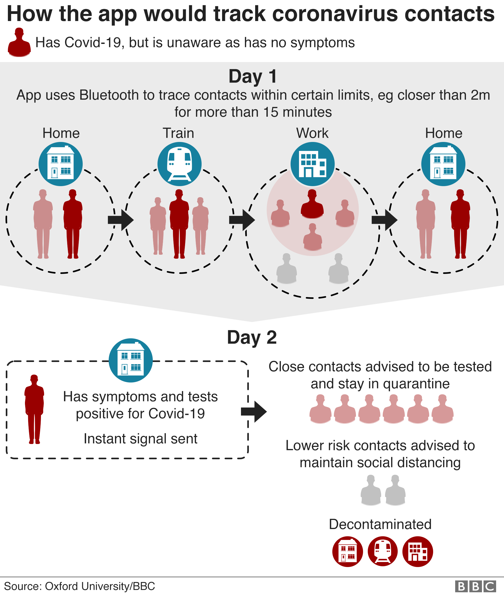

Coronavirus: NHS contact tracing app to target 80% of smartphone users
BBC News
The team estimates that 56% of the general population must use the app to halt the outbreak. Prof Fraser said that equated to 80% of all existing smartphone owners, based on data from Ofcom.
“That’s a very ambitious target,” the professor acknowledged.
"It’s not something that would typically happen for a new app - even an incredibly popular one - but if we can explain that this is a public health intervention, that will be new and different.
